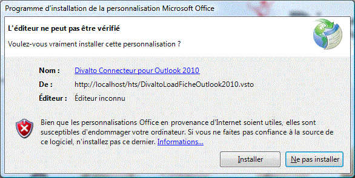

Attention : Quitter Outlook avant de procéder à l’installation.
Si l’utilisateur d’un client léger désire interagir avec Outlook du poste client, il est nécessaire d’installer le connecteur Outlook. Celui-ci s’installe de la même manière que le client léger :

Valider le choix « Installer ».
Le répertoire x:\Divalto\Internet\LCWebService contient l’installateur de la personnalisation de Outlook (ConnecteurDivaltoPourOulook2010.vsto ou DivaltoLoadFicheOutlook2010.vsto selon la version).
Un lien vers l’installation du connecteur Outlook apparaît également dans la page Web de l’installation du Client léger. Un simple Clic sur le lien permet de télécharger puis d’installer le connecteur.